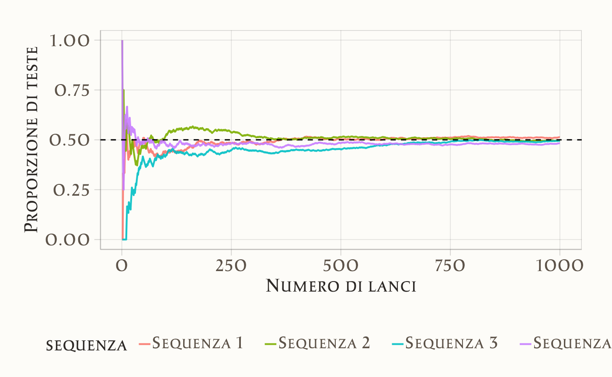

2 Interpretazione della probabilità
“La probabilità non esiste nel mondo reale: è il grado di fiducia che un individuo coerente ripone in un’ipotesi, alla luce di un’informazione.”
– Bruno de Finetti, Statistico bayesiano
Introduzione
In questo capitolo esamineremo come la teoria della probabilità si sia affermata come uno strumento per descrivere e interpretare l’incertezza, muovendoci tra diverse concezioni (classica, frequentista e bayesiana) e riconoscendo il ruolo fondamentale della simulazione nel chiarire concetti probabilistici, come la legge dei grandi numeri. Prima, però, è utile soffermarsi sull’idea di casualità e sul nesso che la lega all’incertezza.
Panoramica del capitolo
- Le diverse interpretazioni della probabilità.
- Incertezza epistemica e ontologica.
2.1 Casualità e incertezza
David Spiegelhalter, in un recente articolo pubblicato su Nature, sottolinea come la vita sia pervasa dall’incertezza: non sappiamo con certezza cosa è accaduto in passato, cosa avverrà in futuro né abbiamo una completa comprensione di ciò che ci circonda (Spiegelhalter, 2024). Questa condizione di ignoranza spinge a interpretare la casualità come un modello che, pur non fornendo previsioni deterministiche, rivela spesso regolarità statistiche. In altre parole, i singoli eventi possono apparire imprevedibili, ma l’osservazione di molti casi analoghi svela andamenti medi stabili e quantificabili.
Da questa prospettiva nasce la teoria della probabilità, intesa come linguaggio matematico rigoroso per quantificare e modellare l’incertezza. Attraverso concetti quali valore atteso, distribuzioni di probabilità e frequenze relative, la probabilità permette di passare dalla nozione intuitiva di caso all’analisi formale dei fenomeni incerti. Anche nell’ambito psicologico, la probabilità supporta la ricerca, l’interpretazione di dati sperimentali e la presa di decisioni cliniche, fornendo una base teorica su cui costruire ipotesi e valutare rischi e benefici.
2.2 Il ruolo della probabilità nello studio dei fenomeni
La teoria della probabilità consente di trasformare le intuizioni sulla casualità in un linguaggio rigoroso. Tra le sue funzioni fondamentali si evidenziano:
Quantificare l’incertezza
Assegnare valori numerici agli esiti possibili rende esplicita la probabilità di ogni evento. Per esempio, nel lancio di un dado, dire che ogni faccia ha 1/6 di probabilità di uscire equivale a tradurre la casualità in un concetto misurabile.Combinare informazioni
Le regole di somma e prodotto permettono di integrare probabilità relative a eventi diversi: la somma si utilizza per eventi mutualmente esclusivi (es. prendere o non prendere un voto specifico a un esame), mentre il prodotto si applica a eventi ritenuti indipendenti (es. risultati di più estrazioni da un’urna).Aggiornare le credenze
Secondo la prospettiva bayesiana, le probabilità non sono statiche, ma si modificano con il sopraggiungere di nuove evidenze. Un tipico esempio è la revisione di previsioni meteorologiche alla luce di dati più recenti, come la pressione atmosferica o l’umidità.Ottimizzare le decisioni
La probabilità guida valutazioni di rischi e benefici, aiutando a scegliere in modo razionale quando l’esito di un’azione non è garantito. Questa idea si applica tanto in campo clinico, per decidere il protocollo di un trattamento sperimentale, quanto in ambito psicologico, per valutare il processo terapeutico per un disturbo alimentare.
Queste funzioni costituiscono l’ossatura della teoria della probabilità e la rendono uno strumento essenziale per affrontare contesti in cui l’informazione è parziale o i fenomeni hanno una componente di casualità irriducibile.
2.3 Due tipi di incertezza: epistemica e ontologica
L’analisi probabilistica si confronta con due tipologie di incertezza:
Epistemica
Dipende dai limiti della conoscenza o dai dati a disposizione. Se in un esperimento non si controllano adeguatamente variabili importanti, la nostra misura di probabilità risente di queste lacune. L’incertezza epistemica può ridursi affinando il disegno sperimentale o ampliando il numero di osservazioni.Ontologica
Inerente al fenomeno stesso, è indipendente dal grado di controllo o di osservazione possibile. Il lancio di un dado rimane imprevedibile anche se conoscessimo le leggi fisiche in gioco e le condizioni iniziali con incredibile precisione. Questo tipo di casualità è connaturato al sistema, e dunque impossibile da eliminare del tutto.
Un celebre riferimento in questo contesto è Niels Bohr, secondo il quale la scienza non fornisce verità assolute, ma costruisce modelli che descrivono la realtà entro i limiti concettuali di cui disponiamo. In questa prospettiva, l’incertezza ontologica segna il confine tra ciò che è conoscibile e la complessità insita nella natura dei fenomeni.
2.4 Cenni storici
La teoria della probabilità affonda le sue radici nei giochi d’azzardo, pratiche antiche che stimolarono riflessioni sui meccanismi del caso. Fu però nel XVII secolo che iniziò a prendere forma una sistematizzazione scientifica, grazie al dialogo tra Blaise Pascal e Pierre de Fermat. I due matematici risposero alle questioni poste dal Chevalier de Méré, un aristocratico appassionato di scommesse. Tra i dilemmi più noti vi era il cosiddetto “problema della ripartizione equa”: come distribuire il premio di un torneo di dadi interrotto prematuramente, basandosi sulle chance residuali di vittoria dei giocatori?
Due giocatori, A e B, stanno partecipando a un gioco in cui il primo a vincere sei round consecutivi ottiene il premio. Dopo sei round, A ha vinto cinque round e B uno. Poiché il gioco viene interrotto, come si dovrebbe dividere il premio in modo equo?
Questo problema spinse Pascal e Fermat a sviluppare i primi strumenti matematici per calcolare la probabilità degli eventi futuri, dando vita a un metodo rigoroso per affrontare l’incertezza. Stimando, ad esempio, che A avesse il 97% di probabilità di vincere e B il 3%, sembrava equo dividere il premio nella stessa proporzione. La soluzione, che prevedeva il calcolo degli esiti attesi e delle relative probabilità, segnò una svolta epocale, gettando le basi per la formalizzazione matematica della disciplina.
Christian Huygens, con il trattato De Ratiociniis in Ludo Aleae (1657), approfondì le applicazioni nel gioco d’azzardo, mentre figure come Leibniz e John Graunt esplorarono rispettivamente la probabilità come strumento logico-giuridico e come frequenza statistica.
Jacob Bernoulli, nell’Ars Conjectandi (1713), formulò la legge dei grandi numeri, evidenziando come ripetute osservazioni empiriche rivelino regolarità nascoste, nonostante l’apparente imprevedibilità dei singoli eventi. Questo lavoro pose le basi per due visioni contrapposte: la probabilità come misura dell’incertezza epistemica (grado di fiducia razionale) e come proprietà oggettiva legata alla frequenza.
2.5 La dualità epistemologica e frequenziale
Hacking (2006) ha sottolineato che, a partire dal contributo di Bernoulli, la probabilità si sviluppò storicamente lungo due assi: da un lato come misura della credibilità di un’ipotesi (prospettiva epistemologica), dall’altro come descrizione della frequenza con cui un evento compare in circostanze ripetute (prospettiva frequenziale). Questa tensione è tuttora visibile nella dicotomia fra metodi bayesiani e metodi frequentisti.
2.5.1 Frequentismo
Il frequentismo intende la probabilità come frequenza relativa dell’evento in un numero potenzialmente infinito di prove. I fondatori di questo approccio, tra cui Ronald A. Fisher e poi Jerzy Neyman ed Egon Pearson, hanno posto le basi dell’inferenza statistica classica (test di ipotesi, intervalli di confidenza, analisi di varianza).
Il modello paradigmatico di questo approccio è il cosiddetto modello dell’urna. Si immagina di estrarre in modo casuale una pallina da un’urna contenente palline visivamente indistinguibili, ma numerate: ogni pallina ha la stessa probabilità di essere scelta, riproducendo così l’idea di eventi equiprobabili. Questa concezione si basa su una rappresentazione astratta e ideale della casualità che, nella realtà, trova riscontro in ambiti quali il campionamento statistico e gli studi clinici randomizzati (in cui ogni paziente ha la stessa probabilità di essere assegnato al gruppo sperimentale o di controllo). Il limite di questa visione emerge nei casi in cui non è possibile accumulare un gran numero di osservazioni o quando l’evento è unico e irripetibile.
2.5.2 Bayesianesimo
Il bayesianesimo si basa sull’idea di un continuo aggiornamento delle nostre credenze. Con il teorema di Bayes si parte da una conoscenza iniziale (detta prior) e la si aggiorna con i dati osservati (likelihood) per giungere a una stima a posteriori.
2.5.2.1 Probabilità come costruzione soggettiva
L’approccio bayesiano è basato su un’interpretazione soggettiva della probabilità, secondo cui tale concetto rappresenta il grado di fiducia (o credenza) che un individuo o un gruppo attribuisce al verificarsi di un evento, sulla base delle informazioni disponibili. Un esempio pratico è la previsione di pioggia al 70%: non si tratta di un fenomeno fisico oggettivo – come avverrebbe in un’ottica frequenzialista – bensì del risultato di dati storici, modelli climatici e continue rivalutazioni.
Bruno de Finetti ha spinto all’estremo questa prospettiva soggettivista, riassumendo il suo pensiero con la celebre affermazione: “La probabilità non esiste”. In altre parole, la probabilità non sarebbe una proprietà fisica intrinseca degli eventi, ma un indicatore di quanto “si è pronti a scommettere” sulla base delle informazioni e delle convinzioni possedute. Sebbene tali convinzioni debbano rispettare gli assiomi della probabilità per risultare logicamente coerenti, la definizione puntuale di quanto un evento sia “certo” o “probabile” dipende dalla prospettiva e dalle informazioni dell’osservatore.
Frank Ramsey, nel 1926, fu uno dei primi a formalizzare questa idea, definendo la probabilità come grado di credenza individuale coerente con gli assiomi matematici (Ramsey, 1926). Pochi anni dopo, nel 1939, Jeffreys (1998) illustrò in “Theory of Probability” una tra le prime esposizioni moderne dei metodi bayesiani. Successivamente, Fishburn (1986) fornì una rigorosa formalizzazione matematica degli assiomi della probabilità soggettiva, mentre Press (2009) contribuì ad ampliare l’ambito di applicazione di questa prospettiva, dimostrando la sua importanza come strumento per affrontare l’incertezza in ambito scientifico. Per una panoramica storica sullo sviluppo del pensiero bayesiano, si vedano anche Bayesian Methods: General Background e Philosophy of Statistics.
In questo quadro, l’attenzione si sposta dalla realtà oggettiva alla costruzione umana della probabilità, ponendo in evidenza il ruolo dei giudizi, delle ipotesi e delle informazioni disponibili. La probabilità non è dunque una proprietà del mondo, ma una misura del grado di fiducia razionale che un soggetto idealizzato assegna all’affermazione di un evento, basandosi sulle conoscenze (spesso incomplete) di cui dispone. Questo soggetto ideale è concepito come privo di emozioni, pregiudizi o bias cognitivi, così da agire esclusivamente sulla base della logica e delle evidenze. Tale impostazione si applica in modo particolarmente efficace in contesti dove i dati sono limitati o l’incertezza è elevata, come spesso accade negli studi psicologici, in cui il comportamento umano mal si presta a una descrizione puramente frequenzialista.
Un aspetto importante che ha contribuito a promuovere la diffusione contemporanea dell’approccio bayesiano è stata la scoperta, sul finire degli anni ’80, dei metodi Monte Carlo Markov chain (MCMC). Queste tecniche hanno reso computazionalmente accessibili modelli e calcoli altrimenti irrealizzabili, favorendo la rinascita e l’ulteriore evoluzione dei metodi bayesiani.
2.6 I due paradigmi della probabilità in psicologia
In psicologia, entrambi i paradigmi hanno risvolti importanti. L’approccio frequentista è ancora dominante nell’analisi dei dati (si pensi al largo uso dei test di significatività), ma il bayesianesimo sta guadagnando terreno, poiché permette di integrare informazioni pregresse in modo trasparente e di esprimere in modo diretto la probabilità di un’ipotesi.
2.7 Dalla teoria alla Pratica: simulazioni con R
Nello studio della probabilità e della statistica, l’analisi analitica può risultare complessa in contesti con modelli intricati o distribuzioni non standard. In questi casi, la simulazione al computer emerge come strumento didattico e metodologico essenziale. Utilizzando linguaggi di programmazione come R, è possibile replicare virtualmente un esperimento migliaia di volte, osservando empiricamente la distribuzione degli esiti e stimando probabilità attraverso il metodo Monte Carlo. Questo approccio non solo facilita la comprensione di concetti astratti, ma consente anche di validare risultati teorici in scenari reali.
2.7.1 Legge dei Grandi Numeri
Un principio fondamentale esplorabile attraverso simulazioni è la legge dei grandi numeri (LLN), pilastro dell’approccio frequentista. La LLN stabilisce che la frequenza relativa di un evento converge alla sua probabilità teorica all’aumentare del numero di prove, pur preservando l’imprevedibilità dei singoli esiti. Ad esempio, in una sequenza di lanci di una moneta equa, la proporzione di “teste” oscillerà inizialmente in modo marcato, ma tenderà progressivamente a stabilizzarsi attorno al 50%.
Questo fenomeno riflette due aspetti chiave:
-
Riduzione della variabilità: la media campionaria diventa sempre più affidabile con l’aumentare della numerosità del campione.
- Separazione tra singoli eventi e comportamento aggregato: la LLN non elimina l’incertezza nei casi singoli (es., il risultato del prossimo lancio), ma descrive un pattern prevedibile a livello di popolazione.
La simulazione seguente illustra questo principio generando quattro sequenze indipendenti di lanci di moneta e calcolando la proporzione cumulativa di “teste”:

Il grafico evidenzia due fenomeni: la convergenza verso il valore teorico (linea tratteggiata) e la variabilità iniziale tra le sequenze, che si attenua progressivamente. Questo esempio dimostra come la LLN fornisca un ponte tra modelli teorici (es., “moneta equa”) e osservazioni empiriche, pur rimanendo valida solo in condizioni di ripetibilità (stesse probabilità in ogni prova) e assenza di bias sistematici.
Le simulazioni trovano ampio utilizzo in psicologia sia nella formazione che nella ricerca:
-
Didattica: visualizzare il comportamento di indicatori statistici (es., media campionaria) al variare della dimensione del campione, rendendo tangibili concetti come “potenza statistica” o “errore standard”.
- Ricerca: testare la robustezza di modelli psicometrici in condizioni controllate, simulando dati con specifiche caratteristiche (es., correlazioni deboli, rumore sperimentale).
Questi strumenti favoriscono un apprendimento attivo, invitando gli studenti a manipolare parametri (es., probabilità di successo, numerosità campionaria) e osservarne gli effetti, consolidando così l’intuizione statistica. Tuttavia, è cruciale ricordare che le simulazioni non sostituiscono la teoria, ma la completano, evidenziandone limiti e presupposti applicativi.
Riflessioni conclusive
La teoria della probabilità, nata originariamente per analizzare il gioco d’azzardo, si è gradualmente trasformata nel corso dei secoli in un pilastro metodologico per affrontare l’incertezza in un’ampia gamma di contesti, compresa la psicologia. La sua evoluzione storica testimonia un confronto continuo fra interpretazioni epistemiche e frequenzialiste, contribuendo all’elaborazione di strumenti analitici e pratiche operative — dalle procedure inferenziali alla simulazione computerizzata — che consentono di modellizzare sistemi complessi.
Da un punto di vista filosofico, la probabilità può essere intesa sia come proprietà del mondo (in chiave frequenzialista), sia come misura della nostra conoscenza (nell’ottica bayesiana e soggettivista). Nel primo caso, le frequenze relative e la legge dei grandi numeri mostrano come, da una moltitudine di eventi, possano emergere regolarità e pattern stabili. Nel secondo, l’enfasi è posta sulla dimensione umana e fallibile dell’inferenza: le credenze e le informazioni disponibili influenzano in modo diretto la nostra stima della probabilità di un evento.
Al di là di queste differenze interpretative, la probabilità si rivela uno strumento insostituibile per pianificare esperimenti, analizzare dati e prendere decisioni in condizioni di incertezza – attività centrali nel campo della psicologia. Inoltre, la possibilità di integrare metodologie teoriche e simulazioni amplia ulteriormente le prospettive di ricerca e la capacità di comprendere i fenomeni studiati. Lungi dall’essere un semplice calcolo combinatorio, la probabilità abbraccia così la complessità della realtà e la ricchezza della conoscenza umana, mostrando una versatilità che la rende uno dei fondamenti del pensiero scientifico contemporaneo.